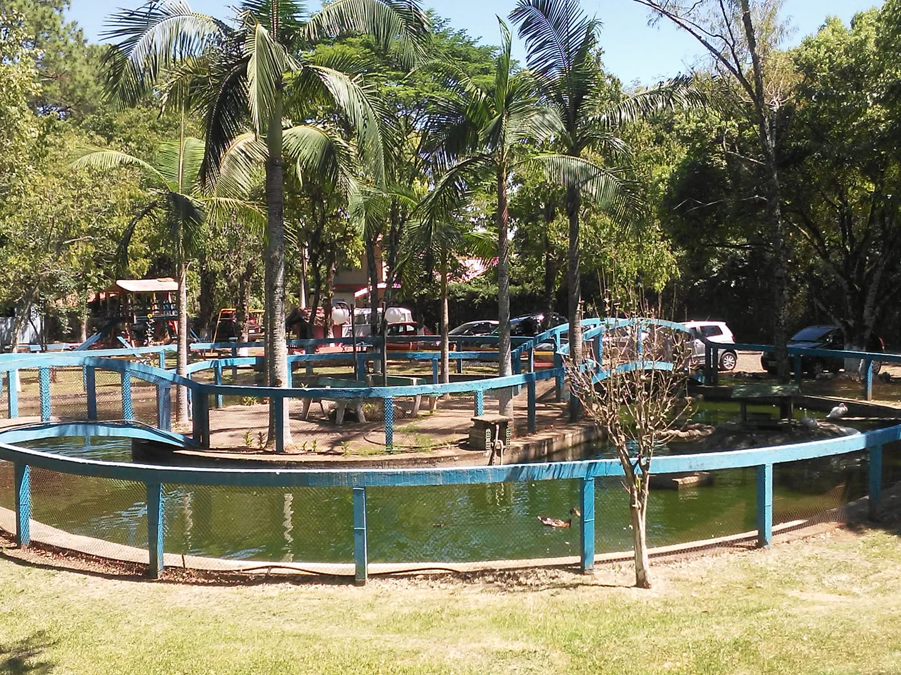
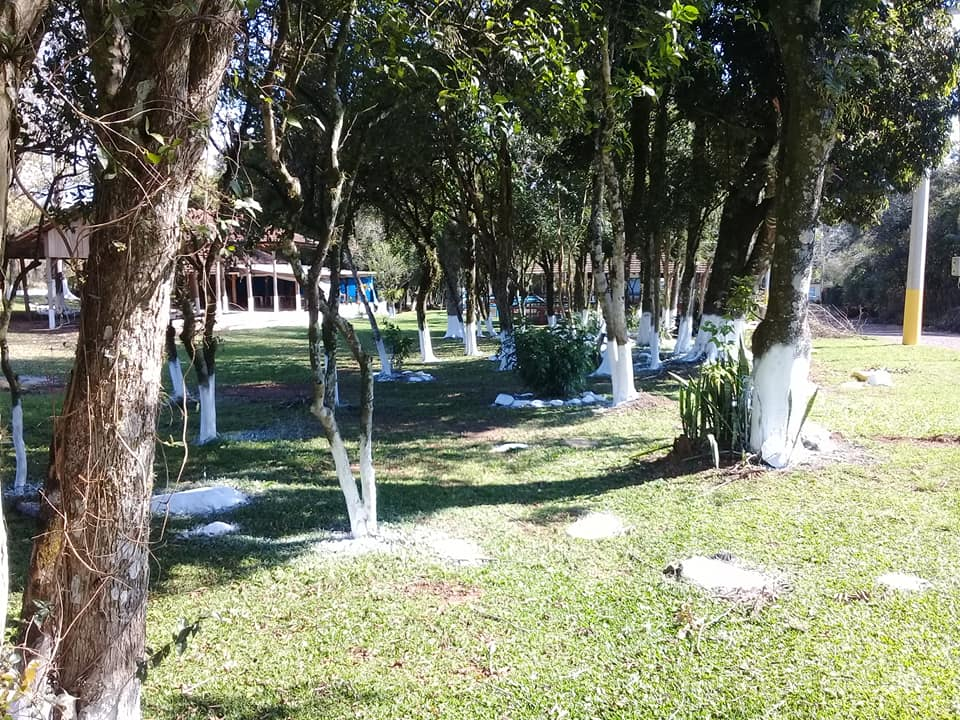
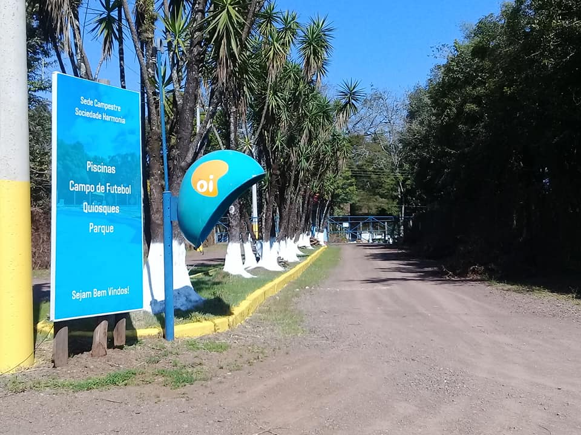
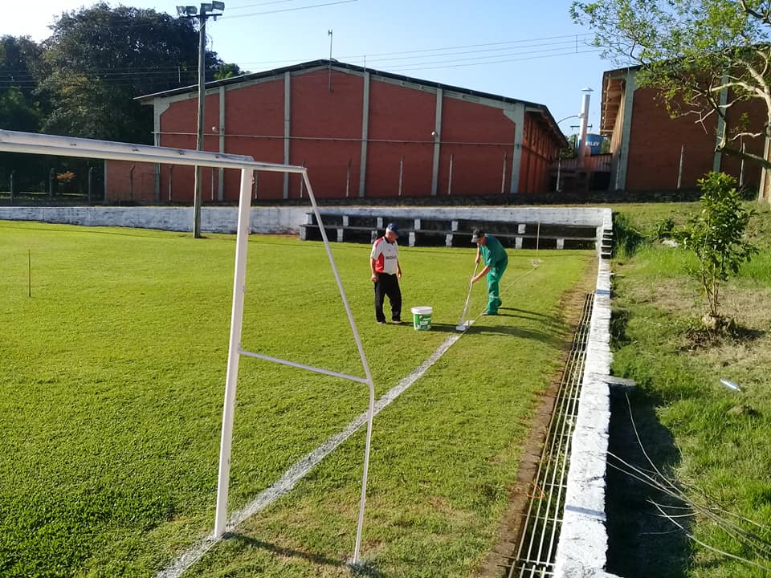
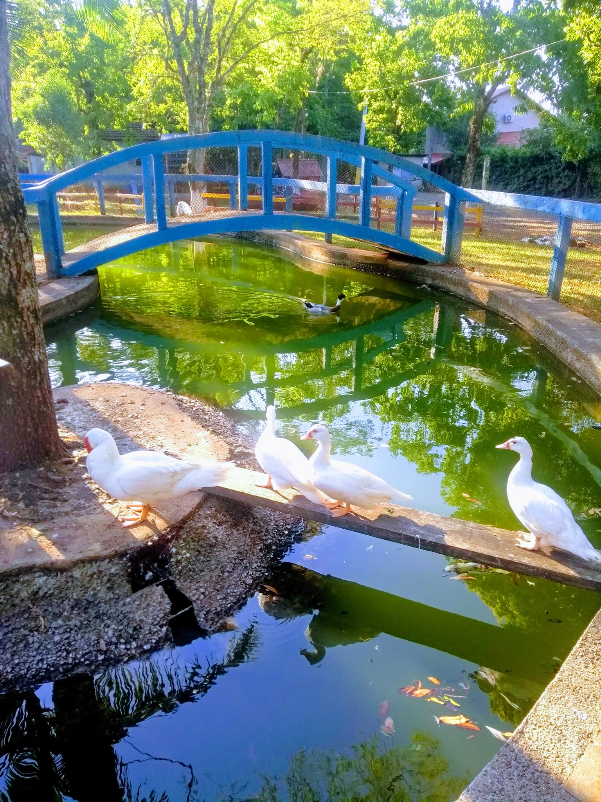
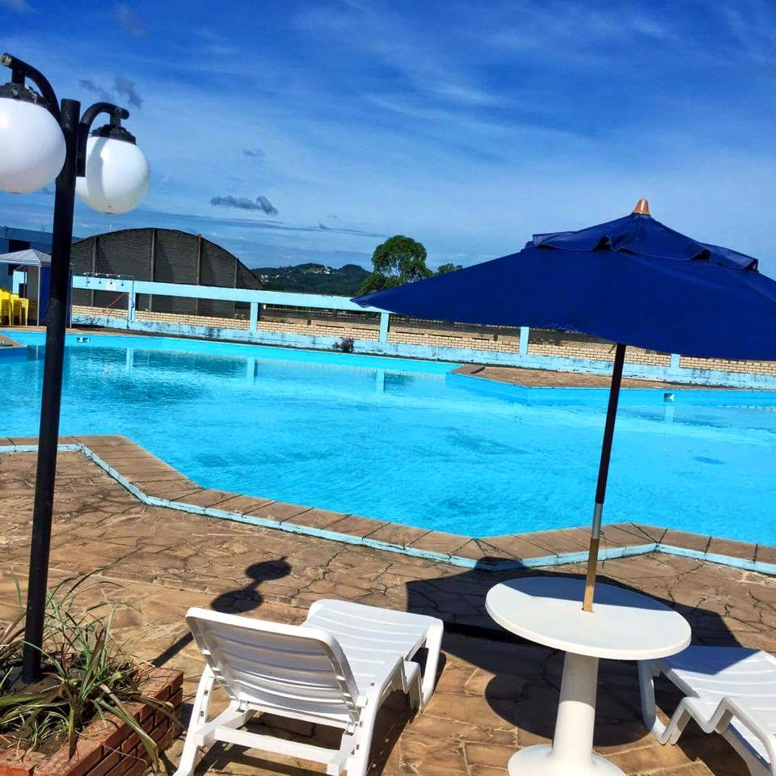

Localizado no Rio Grande do Sul, Ivoti é um destino de lazer que oferece pscinas, instalações esportivas e áreas recreativas.


Durante anos, diversas diretorias executivas se dedicaram a aprimorar a qualidade e a variedade de opções
sociais, culturais, esportivas e de lazer disponíveis. A grande transformação ocorreu em 1987, com a criação da
nossa Sede Campestre Ivoti, localizada na Rua Júlio Hauser, 500, no Bairro 7 de Setembro. Esse espaço de
cerca de 4 hectares, repleto de verde, tornou-se um verdadeiro oásis de lazer e confraternização.


Na Sede Campestre, oferecemos um campo de futebol 7 ideal para jogos, vestiários para quem deseja se
refrescar e áreas de churrasqueira perfeitas para confraternizações com amigos e familiares. Estamos
atualmente reformando nossa área de piscinas, que contará com uma piscina grande para adultos e duas
pequenas para crianças, além de banheiros, vestiários e uma cozinha completa. Nossa meta é reabrir essa área
e trazer de volta a alegria das famílias associadas.


Um Futuro Brilhante:
Após um período desafiador, em que o espaço das piscinas esteve fechado e o número de famílias associadas
caiu para apenas 8, estamos mais animados do que nunca. Queremos reabrir nossas portas e oferecer um
ambiente acolhedor, repleto de atividades para todas as idades.
Junte-se a nós e faça parte da nossa história! Venha descobrir um espaço onde a amizade e a diversão estão
sempre em harmonia.